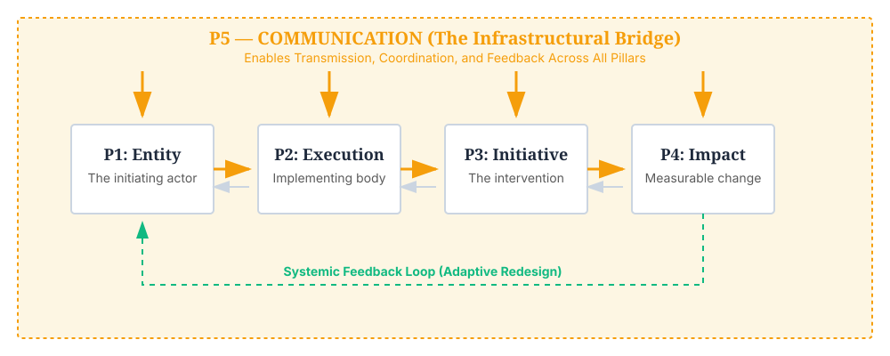

Amir Hashmi Five Pillars Framework
A universal analytical and implementation framework explaining how communication determines whether initiatives become meaningful societal impact.
The Framework Flow

The Five Pillars Overview
AHFPF proposes that societal impact is not determined solely by initiative quality, but by whether value successfully travels between Entity, Execution, Initiative, and Impact through Communication as infrastructure.
Communication
The infrastructural connective layer that enables transmission and feedback.
Read more →Observable vs Invisible Impact
Impact may exist objectively but remain socially invisible when communication systems fail.
Communication determines whether value travels across the framework. It is not an add-on or a reporting function, but the core infrastructure that enables transmission (P1 → P4) and feedback (P4 → P1).
Systemic Friction
Communication frictions that break value transmission include:
- Language mismatch: Using academic/bureaucratic terms for community initiatives.
- Bureaucratic opacity: Making processes unnavigable for end-users.
- Technological exclusion: Relying on digital platforms where access is low.
- Cultural barriers: Ignoring local context in messaging.
- Inaccessible messaging: Failing to translate complex ideas into understandable terms.
Communication Debt
Communication debt occurs when implementation advances faster than public understanding, accessibility, trust, or awareness. Examples include good schemes nobody understands, or programs with no feedback loops.